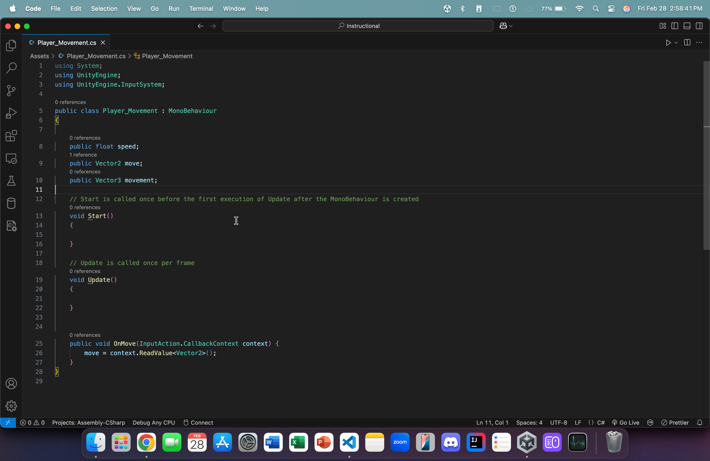

Introduction
Welcome to the Cleveland State University Fall 2025 Game Jam!!!
Here, you'll find instructions on how to setup a basic, topdown game in two engines: Unity and Godot
These will help build a foundation off of which you and your team will build your own, custom, awesome game!
What is Unity?

Unity is a modern, powerful game engine and editor that allows one to create fun and beautiful games using C#. Unity offers a built-in physics engine, a flexible and usable scene system, and licensing freedom as open source software. In addition, developers get access to the Unity Asset Store, which offers thousands of assets for use in your game!
Getting Started
Downloading Unity
- Go to unity.com/download
- Click "Dowload" at the top to download the installer for Unity Hub.
- Follow the installer's instructions to download the Unity Hub.
- Once finished, the Hub should launch automatically and prompt you to download the Unity Editor. Please do so.
- Caution: This is a LARGE installation. Ensure you have ample storage space before proceeding.
Creating a new project
- Once Unity Hub is installed, navigate to the "Projects" sidebar
- Click "New Project"
- In the sidebar, click "All templates".
- We will be using the "Universal 3D" template
- On the side, give your project a name and place it in your desired directory.
- Click "Create project" and it will create and launch the editor automatically.
- This is what it looks like...

General Layout

Counterclockwise...
-
Scene Panel
- This panel contains what scene you're on currently as well as all the game objects that that scene holds (ex: camera, light source, ground object, your player asset, obstacles).
-
File System
- This is where you can see all the files currently within your project. For our purposes, we only need to focus on the Assets folder and its sub-folders. In addition, you can also create your own folders to keep your project organized and functional.
-
Component Panel
- This is where you can see all the different components/parts of your selected game object. These could be things like transformation values (position, scale, and rotation), colliders (allow for collision), Rigidbody (for movement w/ physics) and many more...
-
Scene View
- This is where you can see your scene and how all of your assets physically look in your scene. There are two basic tabs here: the Scene tab and the Game tab. The Scene tab allows you to make whatever changes you want and the Game tab shows what your changes will look like during gameplay. In addition, you can press the play button at the top to start the gameplay at any time you like to test any changes that you have made.
File Setup
Before we proceed, we need to make some additional changes:
- Download this tutorial's assets.
- Download the following Unity Packages
- ProBuilder
- Up top, find the Window tab.
- Click to expand it.
- Look for Package Manager.
- Click on it and it will open a separate window for it.
- Optional: You can drag the window and dock it next to the Scene and Game tabs in your Scene View.
- In the window, on the left, click on Unity Registry.
- In the search bar, start typing ProBuilder and you should see it in the search results below.
- On the right, in the package description, find the Install button and click it to install ProBuilder.
- Unity glTFast
- Follow the same steps as above to navigate to the Package Manager.
- Now, in the corner on the left, look for a plus icon with a dropdown menu triangle next to it
- Should look something like this:
- Expand the dropdown menu and find the Install package by name... option
- In the textbox, paste this name: com.unity.cloud.gltfast
- Click Install and it will install the package and show you a package description (similar to ProBuilder)
- ProBuilder
Why do we need these packages?
- ProBuilder will allow us to create custom shapes and obstacles to place in our scene. Once we learn how to use it, we can let our imaginations run wild!
- Unity glTFast will allow us to actually use .gltf files (and the asset files in the folder you downloaded up above).
Adding a ground object
Let's start by adding a ground object:

- Right-click in the Scene Panel on the left

- Click on Cube to create a cube object

- Double click on the newly created cube object in the scene panel to zoom in on it in the Scene View.
- In the component panel, change the scale's x-component and z-component to 50 and 85, respectively. In addition, change all components of transformation to 0.
- In the component panel, change the scale's x-component and z-component to 50 and 85, respectively. In addition, change all components of transformation to 0.

- From within the updated_assets, click and drag jearl_backwards onto the ground object.

- Repeat step 4 but, this time, drag and drop the motor_oil asset onto the ground (Be sure to place it somewhat far away).
This concludes our scene setup (for now). We will now proceed to the input configuration
Input Configuration
- For this tutorial, we will be using the new Unity Input system.
- Those w/ prior Unity experience may still know how inputs were taken from the user before the addition of the new system (done mostly within code)
- However, with the new system, we can easily configure different actions for our player asset with custom made action maps and key bindings (you can even configure controllers!)
Let's get started!
- Navigate out of the assets folder (if you're following along from the previous page).

- Right-click, hover over Create and scroll down until you see Input Actions. Click it to create a new Input Actions Asset.
- I named mine "Player_Control" but you can name it whatever you want.

- On the right, click Assign as the Project-wide Input Actions. This ensures that our inputs stay consistent and that we don't run into any unexpected errors.
- On the right, click Assign as the Project-wide Input Actions. This ensures that our inputs stay consistent and that we don't run into any unexpected errors.
Now, double-click to open it in a separate window and dock it next to the Scene and Game view.

-
On the left, create a new action map called Player by clicking the plus icon
- An action map is essentially a container that holds bindings (either for a keyboard or for a controller). Once established, this action map (and its associated bindings) can be assigned to whatever asset we want (like jearl_backwards).
- An action map is essentially a container that holds bindings (either for a keyboard or for a controller). Once established, this action map (and its associated bindings) can be assigned to whatever asset we want (like jearl_backwards).

- On the right panel, change the action type to Value.
- The reason is because, conventionally, movement in games is always done by pressing and holding a button (i.e. it generates a continuous value like "WWWWWWWWW..." for forward movement) unlike jumping, for example, where we press once and don't hold.
- The game engine (and our script) will read that continuous string of W's, interpret it to mean forward movement and, consequently, move our player forward so long as it keeps getting those continuous W's.
- It's not exactly like this but hopefully you get the idea üòÅ
- It's not exactly like this but hopefully you get the idea üòÅ

-
In the additional dropdown menu that is spawned underneath Action Type, change Control Type to Vector 2.
- This is because our movement is only in 2 directions (the x-axis and the z-axis). This is unlike Creative Mode in Minecraft, for example, where we can freely move in any direction.
- We will move in the y-axis (via jumping) but not with continuous movement.
- We will move in the y-axis (via jumping) but not with continuous movement.
- This is because our movement is only in 2 directions (the x-axis and the z-axis). This is unlike Creative Mode in Minecraft, for example, where we can freely move in any direction.

- Find the plus icon next to Movement (in the center panel). Click it and then, in the dropdown menu, click Add Up/Down/Left/Right Composite
- This will automatically create placeholders for 4 movement bindings (WASD) and bind/aggregate them into a single Vector 2 vector.
- I haven't tried it but you could try manually creating each key binding (without the composite). However, you will have to aggregate them yourself in your script.
- Using the composite, therefore, will result in less headaches and a cleaner setup.
- This will automatically create placeholders for 4 movement bindings (WASD) and bind/aggregate them into a single Vector 2 vector.

- Expand the newly created 2D Vector dropdown to show the 4 empty bindings.
- Now, for each binding:
- Click on it in the center panel
- On the right, open the Path dropdown.
- Here, either search for the key to bind or click the Listen button and press the key you'd wish to bind and it will pop up in the dropdown below.
- Click your desired key to attach it to the Up binding.
- Repeat for all 4 bindings.
- Now, for each binding:

- Up top, in the right corner, click Save Asset to save changes.

- Let's navigate back to the Scene View.
- Click on jearl_backwards in the scene view itself (or in the scene panel on the right)
- In the component panel on the right, we will add a Player Input component to attach our newly made action map and key bindings to our player asset
- In the search bar, start typing Player Input and you'll see it below.
- Click it to add it to the jearl_backwards asset.
- Notice that Unity will automatically assign our custom-made Input Actions asset here.
- The Actions attribute will be the Player_Control Input Actions asset (which, you can see, is visible below in our assets folder)
- The Default Map attribute will be the Player binding map (which we just made).
Now, it's time to put all this together in a C# script.
But, now we need to set up our code editors.
- For my Mac folks, we are gonna have to use Visual Studio Code.
- For my Windows folks, you guys are free to choose between VS Code and Visual Studio (the purple one).
For this tutorial, as a Mac user, I will use VS Code. But, you guys are free to use whatever is most convenient for you.

- Click on jearl_backwards
- In its component panel, at the bottom, click Add Component
- In the search bar, start typing New Script
- You should see the option shown in the image above.

- Name the script something like Player_Movement. Then, click Create and Add. This will create the script and add it as a component to this object (jearl_backwards)
Now, when you double-click the script (inside the script component), assuming you set up your respective IDE correctly, it should automatically open the script in said IDE. For me, in VSCode, it looks something like this:

Let's write some code to allow player movement!
- In the Update function, type MovePlayer() (we'll define this function later).
- This function, as per the description of the Update() function, will run every single frame of the gameplay (which is what we want)

- Add three variables before Start() but inside our main method:
- public float speed
- This will dictate, well, the speed of our movement (we will be able to set the value of this variable inside our editor before hitting the play button as it is public)
- public Vector2 move
- If you remember from earlier, our movement (inside our action map) is strictly in 2 directions (that's what we want). We limited our key bindings to Vector2.
- Thus, when we read our player's movements, they will be in a 2D vector and will be placed inside an onject of type Vector2
- public Vector3 movement
- Since our game world is a 3D space, we need to translate our 2-dimensional movement into a 3D vector w/ the y-axis (straight up) set to 0.
- Bonus question: why would we set the y-axis to 0 in our 3D vector?
- Since our game world is a 3D space, we need to translate our 2-dimensional movement into a 3D vector w/ the y-axis (straight up) set to 0.
- public float speed

-
Add the following function after Update():
- public void OnMove(InputAction.CallbackContext context) {
move = context.ReadValue< Vector 2 >();
}
- Imagine your player asset is a toy remote car:
-
Your keyboard/controller is the remote
-
Unity's Input System is the "messenger"
-
The function OnMove is the car receiving the message
-
The CallbackContext is the message itself (the message that you send to the function upon a button press)
- The message says what you (the person controlling the car) want the car to do.
- Move? Move where? How fast? Is this gonna happen once or continuously?
- The message says what you (the person controlling the car) want the car to do.
-
In this case, the message is a 2D Vector indicating which direction you're moving in.
-
Consider the following example:
- In a 2D space like the one below:

- (0,1) would mean "move in the +y axis" (i.e. upward)
- But now, when we translate this 2 dimensional movement into a 3 dimensional world, we have to be careful.
- The y-axis is now upwards (directly upwards). The newly added z-axis is the new "forward" axis. And x is still for left/right movement.
- So, when we map (0,1) from 2D to 3D, we would have to assign it in some way like this (assume our 2D vector is called "move", like above, and our 3D vector is still "movement"):
- movement = new Vector3(move.x, 0f, move.y);
- Why?
- Like I said earlier, we don't move upwards with WASD. We only move along the x and z axes.
- Since our 2D vector is (0,1), our 3D translation of this 2D vector (0, 0f, 1). Which means that we are now moving (in the 3D space) 1 unit in the positive z-axis (AKA forward)
- Now, since this action is repeated every frame, in 60 fps gameplay, our character will have smooth forward movement.
- In a 2D space like the one below:
-
- public void OnMove(InputAction.CallbackContext context) {
move = context.ReadValue< Vector 2 >();
}
This is the perfect segue to our next addition to this script!

- We now add a new function which we place inside of Update() (so that it is called every frame). Inside of that function:
- We placed the movement = new Vector3(move.x, 0f, move.y) line
- We also placed a new line: *tranform.Translate(movement * speed * Time.deltaTime, Space.World);
- What does this mean?
- transform
- Refers to this game object (the one that this script is attached to)
- .Translate
- Allows us to move the object from its current position.
- movement * speed * time.DeltaTime
- We multiply our speed value by our movement vector (so that we're not at a speed of 1 unit per frame)
- time.deltaTime
- What is that?
- This allows our player movement to be frame-independent
- Imagine that your computer runs the game at 60 fps (frames per second)
- We can calculate the total # of units moved by the player by doing:
- 60 * 5 (our speed, let's say) * movement ([0, 0, 1], let's say)
- Thus, we moved 300 units in total
- Let's assume your buddy's PC runs at 120 fps
- Then, by the same calculation (with the same movement), I moved 600 units in total when I run the game on his PC.
- That's not good! This means that the higher the FPS is, the faster we move.
- Then, by the same calculation (with the same movement), I moved 600 units in total when I run the game on his PC.
- This is why we multiply this expression by time.deltaTime (whose value is roughly equal to 1/your fps amount).
- 60 * 1/60 = 1 & 120 * 1/120 = 1. Therefore, our overall movement stays consistent across different machines (since we're just multiplying by 1).
- Space.World
- This allows our player object to move relative to the game world's global axes.
- This means that, regardless of where I am or what direction I'm facing or what orientation the camera's in, when I press W, I will always move in the positive z-axis.
- transform
Now, let's go back to the Unity Editor.
- Now, when you press the play button up top, you should be able to move around (make sure your speed value is not 0)
Fatal error (this is me from a couple minutes in the future). I just realized that I placed down the assets in the wrong way. If you've been following this tutorial, when you ran the game, your player is likely moving in the complete opposite directions.
Fix: Swap your jerry can and jearl_backwards assets' positions and also turn the camera so it is properly oriented and centered on our player. And it should work.
You'll notice that the player is "stiff". He's always looking in the same direction. Let's change that so that the player looks in the direction that we're moving in!

- Back in our script, add the following line:
- transform.rotation = Quaternion.Slerp(transform.rotation, Quaternion.LookRotation(movement), 0.1f);
- What does this mean?:
- transform.rotation
- Now, we're accessing this game object's rotation characteristic (before, it was translation)
- Quaternion.Slerp(...)
- In mathematics, Quaternions are objects that are used to represent rotations in a 3D space
- The function .Slerp() takes two such quaternions and interpolates (or transitions) between them with a given strength (indicated by a floating-point number).
- (transform.rotation, Quaternion.LookRotation(movement), 0.15f)
- Here, our two quaternions are:
- transform.rotation
- This object's current rotation
- Quaternion.LookRotation(movement)
- The rotation required to face in the direction of the given 3D vector (we used the Quaternion class's built-in function, LookRotation, to achieve this)
- 0.1f
- We transition between these two rotations with a strength of 0.1 (which is slow enough to see the transition)
- Our game object will smoothly transition between rotations (instead of snapping) when we press WASD.
- We transition between these two rotations with a strength of 0.1 (which is slow enough to see the transition)
- transform.rotation
- Here, our two quaternions are:
- transform.rotation
Now, when you go back to the Editor, let the new script update, and hit Play, you should see movement and the player object rotate (i.e. look) in the direction of movement. Isn't that cool?
Now, let's add some jumping functionality

- Back in our action map, right click on the "Player" action map and hit Add Action.
 18. Click once on the newly created action, press `Enter`, and rename it to Jump
- Also, on the right-hand panel, ensure that the *Action Type* attribute for this action is **button** (we will press the jump button once to jump and that's it)
18. Click once on the newly created action, press `Enter`, and rename it to Jump
- Also, on the right-hand panel, ensure that the *Action Type* attribute for this action is **button** (we will press the jump button once to jump and that's it)

- Open the dropdown menu of "Jump" to access the new empty binding
- Over to the right, open the Path dropdown and either search for the Spacebar or use the Listen feature (like earlier)
- Select Spacebar from the search results to assign it to the empty key binding

- Back in our Scene View, click on jearl_backwards to access its components
- Click on Add Component and, in the search bar, start typing Rigidbody. You should see it in the search results.
- Click on Rigidbody to add it to our player object
- What's the point?
- This component enables our player object to now be affected by physics (i.e. gravity)
- Without this, our jump functionality would not work and be very wonky

- Inside of the Rigidbody component, under the Constraints dropdown, check the boxes for the X and Z axes for Freeze Rotation
- Why?
- This will prevent unwanted rotations or leaning when our player interacts with or collides with any uneven surfaces
- Locking these two axes ensures that our jump force is only applied to the y-axis (directly up) and nowhere else
- Why?
Let's make a few changes to our script

- Add the following three variables up top:
- Rigidbody rb;
- public bool isGrounded;
- public float jumpStrength = 7f;
- Let's take a look at these:
- Rigidbody rb
- This will hold the Rigidbody component of this object (the object that this script is attached to). Which will allow us to add forces to it later
- public bool isGrounded;
- This ensures that we can only jump again once we have landed (and not at any other time)
- Simply relying on collisions can cause some errors.
- Without this check, we could either fall through the ground or keep jumping up forever and never land.
- public float jumpStrength = 7f;
- Self-explanatory. Allows us to tweak the strength of our jump (we can also give custom values in the editor itself)
- Rigidbody rb

- Underneath our OnMove function, add this function.
- The syntax is mostly the same except for one key difference...
- context.performed
- Remember, we are not pressing and holding the jump button. This is a one-and-done type of action
- Therefore, we do not need to constantly read a value from the action map (like OnMove)
- We just need to check, once, whether or not we received a context (message) from our key binding (the jump button)
- If we did, we print a message to the console
- If we did, we print a message to the console
- We just need to check, once, whether or not we received a context (message) from our key binding (the jump button)
- context.performed
- The syntax is mostly the same except for one key difference...

- Add the inner if statement that you see up above.
- What does this even mean?:
-
We nested this addition inside of our context.performed if statement
- This ensures that if we press the jump button while the player object is airborne, we won't add more force to the player (i.e. double jump)
- Not necessarily a bad thing. Feel free to implement this later if you want to.
- This ensures that if we press the jump button while the player object is airborne, we won't add more force to the player (i.e. double jump)
-
if (isGrounded) {...}
- If isGrounded is true (i.e. we are on the ground)
-
rb.AddForce(Vector3.up * jumpStrength, ForceMode.Impulse)
- We will add an impulse force (instantaneous force) to our Rigidbody component, which will, in turn, affect the player object.
- This force will be equal to the 3D up vector (whose value is (0, 1, 0)) multiplied by our jump strength
-
- What does this even mean?:

- In our Start function, add the above line
- This allows us to actually access and store this object's Rigidbody component inside of our variable to use in our script.
- We placed this inside Start() so that this action is only performed once. We access the Rigidbody component once, store it, and that's it.
- EDIT (This is me from the future) --> Change this line from .GetComponent... to = GetComponent...
But, how can we actually if the object has even landed to then enable it to jump again?
The answer? With collisions

-
Add the following function below our OnJump function.
- Do note that this is a built-in function that we are simply overwriting.
- Intellisense and autocomplete should kick in as soon as you start typing the function name
- Upon any collision, Unity, by default, calls this method. The physics engine is fast enough to even call this multiple times per frame.

- Add the following line to the function body
- What does this mean?
- Debug.Log(...)
- This is here to ensure that a). a collision occurred and b). it occurred with the correct object
- if (collision.gameObject.CompareTag("Ground")) {
- When a collision occurs, the collision variable in our method signature will be given information about the collision.
- The collision. refers to the collision that just occurred
- The .gameObject refers to the other object that this object collided with
- The .CompareTag checks if that other object held a tag of "Ground" (we'll go over this in just a little bit)
- So, if the other object in the collision that just happened with our object is tagged with the tag "Ground", then...
- We set isGrounded to true (i.e. we have landed).
- When a collision occurs, the collision variable in our method signature will be given information about the collision.
- Debug.Log(...)
- What does this mean?

- Once you click Add Tag..., hit the plus to create a new tag
- In the pop-up box, name it "Ground" (be sure to name it EXACTLY what the name was in our if statement in the script)
- Click Save
- Navigate back to the Ground object's component view and, in the Tags dropdown, click on the newly created Ground tag to assign it to this object
- Unity does NOT do this automatically (üòî). So, don't forget to do it.
So now, assuming everything was set up correctly, upon running our game, you should be able to move AND jump!
Now, for a final touch (before moving on to animations), let's fix the position of our camera

- Let's make a new script for our Main Camera object
- Click on it to open its Component view on the side.
- At the bottom, click Add Component and type in the box New Script
- Let's name the script Player_Follow
- Once created, double-click to open it.

- Let's add the following variables first:
- What do they mean?:
- public Transform player;
- We will need this later to hold information about our player object (we'll just click and drag our player object into this variable in our Editor later)
- public Vector3 offset = new Vector3(...)
- This is the three dimensional position that the camera will be locked at.
- Note: These are coordinates that I decided to use after a bit of trial and error (I just like how the camera sits at this position)
- You can experiment yourself to find the location that you find better.
- Move the camera to that position. Then, just copy its Position values into this Vector3 variable
- public Transform player;
- What do they mean?:

- Now, we'll add the lines up above into the Update() method
- What does this mean?
- transform.position = player.position + offset;
- We're gonna take the position of this game object (the object that this script is attached to) and add to its position (which is in threee dimensions) the offset that we set up above.
- transform.LookAt(player);
- This line will apply a rotation to this game object (the camera) that will ensure that its forward vector (the z-axis vector) is pointing directly at the specified game object (which we set to the player variable which, if you remember, we'll set in the Unity Editor)
- transform.position = player.position + offset;
- What does this mean?
Now, when you return to the Unity Editor and look at the Main Camera's components, make sure to drag jearl_backwards into the empty slot next to the player variable. Run the game and see if the camera is attached to the player object,
We are now finished with the input configuration. Next, we will add animations to the player object
Let's get Visual Studio Code set up!
-
Download Visual Studio Code.
-
In VSCode, navigate to the extensions page on the sidebar and download the following extensions:
- C# Dev Kit (by Microsoft)
- Unity (by Microsoft)
-
Next, open your Unity Project and do the following:
- For Mac
- Go to Unity and then click Settings
- In the left sidebar, find and click External Tools
- In the External Script Editor sidebar, find Visual Studio Code.
- If not there, click Browse...
- Go to Applications and find Visual Studio Code then click Choose
- Close out of Settings
- For Windows
- Go to Edit (up top), click it, and then find and click Preferences
- On the left sidebar, find and click External Tools.
- In the External Script Editor, find Visual Studio Code.
- If not there, click Browse...
- In File Explorer, on the top right, search for the Visual Studio code .exe file (the actual application itself)
- Double click it.
- For Mac
-
Upon returning to the Unity Editor, inside the dropdown bar, you should see something like this:

Visual Studio Setup
What is Godot?

Godot is a powerful, lightweight, and beginner friendly game engine that allows people to rapidly create games in GDScript, C#, C++, and many other programming languages. It features a flexible node based scene system, a robust animation system, and a built in physics engine, while offering transparancy and licensing freedom as open source software.
Getting Started
Downloading the Engine
- Go to godotengine.org
- Click "Download Latest"
- Click the blue "Godot Engine" button
- Unzip the downloaded file, and run the program (the one without "console" in the file name)
Making a Project
- Now that the window program is open, hit the
Createbutton, give your project a name, location, and set the renderer toForward+, then hitCreate & Edit
Learning the Layout

There are a few major parts of the UI here, let's go through them one by one:
- Scene tree - This is the top left window, it contains a heirarchical representation of every node in the scene (we'll go over what nodes are later)
- Filesystem - This is the botton left window, it contains all the files in your project
- Properties editor - This is the window on the right, if you have a node selected in the scene tree, it will show all the properties of that node for you to edit
- Scene viewer - This is the large pane in the middle, it has four modes,
2D,3D,Script, andAssetLib.2DAllows you to view and edit the 2D component of the scene (this can be a menu, a 2D game, or a GUI on top of the 3D game).3Dallows you to view and edit the 3D component of the scene.Scriptopens the script editor and allows you to write code in GDScript (you will need an external program if you choose to use a different language). AndAssetLiballows you to download community assets and plugins to give you access to more features.
Snapping
- Throughout this guide, you will be moving, rotating, and resizing objects in the editor. Godot has a "snap" mode that will snap these actions to certain intervals, depending on what you are doing, you may want this on or off.

- The magnet with the three dots toggles snap, and the
Configure Snap...allows you to modify how rough or granular the snap is.
Making a Game
Getting the Assets
- Download the premade assets here.
- Extract the zip file and drag the files into Godot's filesystem, it should now look like this:
- Notice how the gltf files (which contain models) were split into png images, since Godot converts models to scenes which reference the textures externally.
- There is a problem though, Godot automatically compresses imported textures to save space. This is fine most of the time, since most textures are large and single pixels won't make a difference, but these assets use pixel art, which involves small textures where each pixel matters. This causes the model to look wrong. To fix this we can change the import settings of the textures.
Fixing the Assets
- Select a texture, go to the "Import" tab, change the "Mode" to "Lossless", then hit "Reimport (*)". Repeat this process for all the textures.

Now that our assets are ready, let's set the scene.